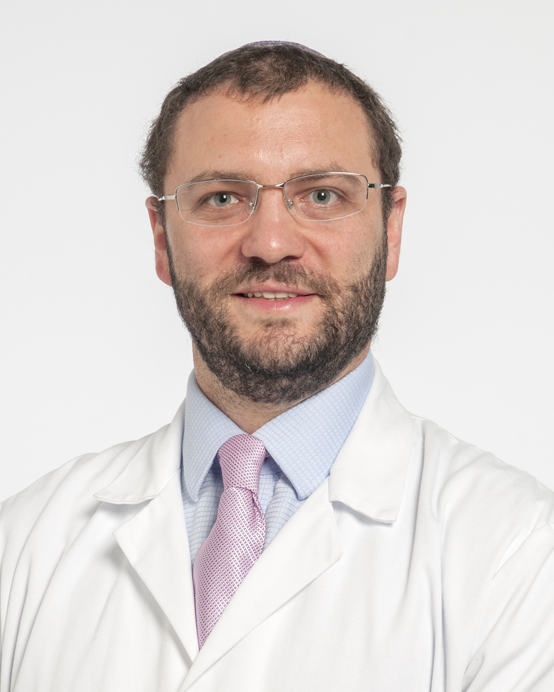

Javier Pizarro-
Berdichevsky
Presentación profesional
Médico especialista en obstetricia y ginecología, dedicado a la uroginecología y los trastornos del piso pélvico. Su trabajo conecta la atención pública en el Hospital Dr. Sótero del Río con la docencia en la Pontificia Universidad Católica de Chile y la investigación clínica. Ha impulsado la formación de especialistas y el acceso a neuromodulación sacra en el sistema público.
Trayectoria

Tres líneas de una misma trayectoria en piso pélvico
Investigación
*Cifras declaradas en la biografía del CV maestro; sujetas a actualización.
Prolapso de órganos pélvicos, tratamientos no quirúrgicos, cirugía de incontinencia y neuromodulación.
Participación en comités de terminología y educación de IUGA; representación latinoamericana en su International Advisory Board, según el CV maestro.
Clínica y docencia
Atención de trastornos del piso pélvico en el Hospital Dr. Sótero del Río.
División de Obstetricia y Ginecología, Pontificia Universidad Católica de Chile.
Dirigió el programa de perfeccionamiento en uroginecología y piso pélvico UC / Sótero del Río / La Florida (2016–2022).
Impulsó la neuromodulación sacra en la red pública. El CV maestro registra su trabajo con FONASA para incluir esta terapia en el sistema público en 2022–2023.
Áreas de trabajo
Prolapso genitalIncontinencia urinariaVejiga hiperactivaNeuromodulación sacraPiso pélvicoSociedades y labor editorial
Miembro desde 2009; comités de Terminología y Estandarización y de Educación, según el CV maestro.
International Urogynecology Journal desde 2015 y Ars Medica desde 2019, según el CV maestro.
Publicaciones seleccionadas
Primer autor y autor de correspondencia. International Urogynecology Journal 29:873–880. DOI: 10.1007/s00192-017-3450-0.
Primer autor y autor de correspondencia. Journal of Urology 199:1032–1036. DOI: 10.1016/j.juro.2017.11.066.
Coautor. Revista Brasileira de Ginecologia e Obstetrícia 46. DOI: 10.61622/rbgo/2024AO11.